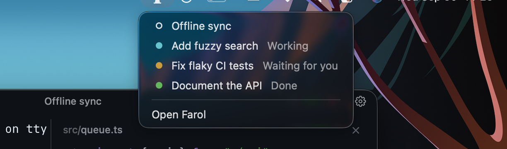

Install
- Download the latest Farol.dmg.
- Open it and drag Farol to Applications.
- Open Farol from Applications or Spotlight.
Farol needs Apple Silicon and macOS 14 or later. Releases are signed and notarized.
Already use Ghostty? Farol reads your Ghostty configuration first, then applies anything in its own configuration file.
Connect agents
Open Settings → Agents to connect an agent. Farol keeps each tool's existing settings and makes a backup before adding hooks.
Claude Code
Click Connect. Farol adds status hooks to ~/.claude/settings.json. Disconnect removes only Farol's hooks.
Codex
Interactive sessions report their status through terminal titles automatically. Keep terminal titles enabled in Codex. Click Connect to cover non-interactive runs and background agents too, then restart open sessions and review the hooks with /hooks.
Codex hooks require version 0.159.2 or later.
More than one account
Farol finds agent folders such as ~/.claude-* and ~/.codex-*. Connect each account in Settings, then choose the one you want when starting a task.
Other agents
Every Farol session exposes $FAROL_CLI. An agent can report its state with:
"$FAROL_CLI" status working
"$FAROL_CLI" status waiting
"$FAROL_CLI" status done
"$FAROL_CLI" status clearAn agent that rings the terminal bell also shows as waiting without setup.
Tasks and worktrees
Press ⇧⌘N to start a task. Describe the work, choose an agent and account, then pick a branch name. Farol creates a git worktree and sends the task as the agent's first prompt.
You can start from one of your open Jira tickets or the repository's GitHub issues. Farol names the branch from the ticket and gives the agent its full description.
Why worktrees? Each task gets its own checkout, so agents on different branches never write to the same files.
Press ⇧⌘T when you want a worktree session without starting an agent. Closing a worktree session offers to remove the checkout and always keeps its branch.
Agent status
The dot beside a session tells you what needs attention. Its colors come from the active terminal theme.
| State | Meaning |
|---|---|
| Idle | No active agent state. |
| Working | The agent is processing a prompt or using tools. |
| Waiting | The agent needs approval or an answer. |
| Done | The turn finished while you were elsewhere. |
Use ⌘P to search and switch sessions. Settings can also group sessions under each project's name.
Review and ship
The title bar shows the current branch's changed lines. Click the count or press ⌥⌘R to review every changed file as one scrolling diff.
- Files: Press ⇧⌘E to browse the project, open a file beside the terminal and save quick fixes with ⌘S.
- Review: Compare uncommitted work or everything since the branch left main or another branch.
- Git graph: Press ⌥⌘G to inspect branches and commits, then check out, create, rebase, delete, cherry-pick or revert.
- Ship: Commit, push and open a pull request on GitHub or GitLab from the review panel.

From any app
In Settings → Agents → Outside Farol, turn on the menu bar lighthouse or the small status panel. The panel can sit at the notch or on a screen edge, and you can drag it along that edge.
Both show which sessions are working, waiting or done. Open a session directly from either one. When an agent waits or finishes in the background, Farol sends a notification and counts waiting sessions on the Dock icon.

Configuration
Use Settings or edit ~/.config/farol/config. Both update the same file, and changes apply to every session when you save.
theme = Farol Dark
font-family = JetBrains Mono
font-size = 14The file uses Ghostty's configuration format, so options from the Ghostty documentation work in Farol.
Custom themes
Put Ghostty theme files in ~/.config/farol/themes. They appear in Settings → Appearance after Farol's built-in themes. The Themes folder button opens the right location.
Shortcuts
| Action | Keys |
|---|---|
| New task | ⇧⌘N |
| New session | ⌘T or ⌘N |
| New worktree session | ⇧⌘T |
| Search sessions | ⌘P |
| Split right or down | ⌘D or ⇧⌘D |
| Toggle sidebar | ⌘B |
| Toggle files | ⇧⌘E |
| Review changes | ⌥⌘R |
| Git graph | ⌥⌘G |
| Find in the focused pane | ⌘F |
| Settings | ⌘, |
Ghostty's other default shortcuts, such as ⌘K to clear and ⌘+ to zoom, also work in Farol.
Troubleshooting
An agent stays idle
Open Settings → Agents and check its connection. For Codex, keep terminal titles enabled. After connecting hooks, restart sessions that were already open.
A configuration change does not appear
Save ~/.config/farol/config, or press ⇧⌘, to reload the configuration manually.
Something else is wrong
Check the latest release, then open an issue with your macOS version and the steps that reproduce the problem.